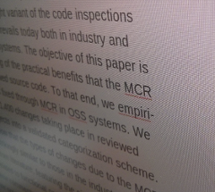

It always annoyed me when I had to hand-in an abstract for a conference paper or a journal paper through EasyChair, that I could not simply copy the abstract from my PDF or my LaTeX sources.
 When I did, I had all these stupid line breaks in the text, that stemmed from the two-column article layout, or all the LaTeX special characters when I copied the TeX source.
So, in the past, I had to manually delete all these stupid line breaks. With hy-phe-na-tion in the PDF, things got really ugly: I had to repair all the broken, hyphenated words. As it happens, I always have no time for these things when I submit my abstract. If you felt the same, well, despair no more, because my frustration led to the Abstract Formatter. It not only removes all those unwanted line breaks for you, but it also does some nice sanity checking on your abstract, giving you that comfy feeling of a really tiny tool that just does what it should do. And it can handle TeX code, too.
Here are my promises:
Your formatted abstract from the PDF or LaTeX source!